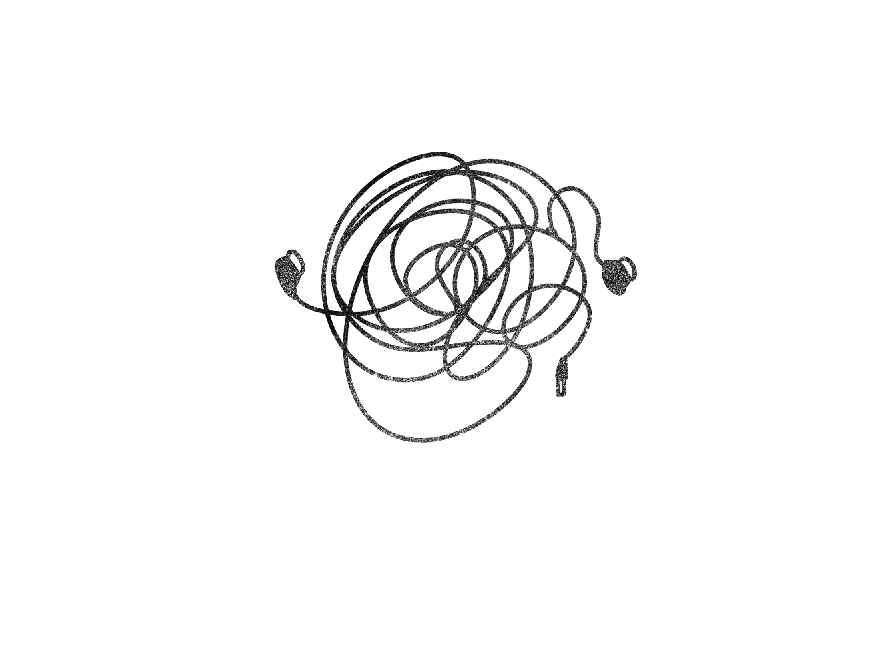

About
Started by asking the question "What resources can we exchange from the people around us?" I decided to do an experimental project called Barter Challenge. I started with a pin, which is probably the most common thing you can see in our studio, and got a bracelet by exchanging the pin. By playing the middleman role, I show the item I got from the last person to the next person and ask if they're willing to exchange with me with any item they have with them. While exchanging, I ask everyone two questions: 1. What do you do? 2. What's the story between you and this item? The process and result is totally accidental and uncontrolled.
Starting A Project By Asking Questions
- How to translate humor across cultures?
- How does where we live impact the way we respond to the world around us?
- How does our experience influence our perspective?
- How does our choice influence our future path?
- Does our way of thinking change when we switch languages?
- How important is the ability of cross-cultural cognition to understand metaphor correctly?
- Should we always design for specific audience?
- How to causes the resonance of the audience?
- Do people tend to get more engaged with something when it’s about themselves?
- What get people thinking?
- What’s the difference between object consciousness and self consciousness?
- How much anxiety do we need?
- How much judgement do we need?
- Is self-doubt a process of self-improvement?
- Can we find a regular pattern for individual design process?
- What leads us to the AHA moment?
- Where do we learn all we want to learn?
- How to exchange resources with people around us?
- What can communities do to us?
- What can we do to communities?
Stuck Point

:(

Opps!